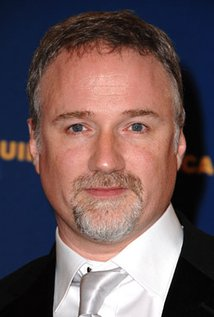

Het hoofdpersonage (gespeeld door Edward Norton) heeft last van slapeloosheid. Hij bezoekt uit verveling praatgroepen (waaronder één voor patiënten van teelbalkanker). Door deze groepen weet hij zijn emoties los te laten en kan hij weer slapen. Als een eigenaardige vrouw, Marla (Bonham-Carter), eveneens voor haar plezier naar deze groepen gaat en daardoor zijn herstel verstoort, krijgt hij weer met slapeloosheid te kampen.
Op de terugweg van een zakenreis, ontmoet de verteller Tyler Durden (Pitt) in een vliegtuig. Bij terugkeer blijkt zijn appartement te zijn opgeblazen en kan hij nergens terecht. Eerst wil hij Marla bellen maar belt, in plaats van naar haar, naar Tyler via het visitekaartje dat hij van hem kreeg. Ze ontmoeten elkaar in een bar en discussiëren over de moderne man. De verteller vraagt of hij bij Tyler mag verblijven. Tyler zegt ja, maar de verteller moet hem een plezier doen door hem zo hard mogelijk te slaan. De twee maken ruzie op de parkeerplaats van de bar. Na het gevecht logeert de verteller bij Tyler en blijft daar mettertijd ook wonen. De verteller komt erachter dat het vechten hem pleziert. Zo ontstaat Fight Club.
De club wordt steeds groter. Tyler deelt al snel "huiswerk" uit aan de leden van de club, wat later uitgroeit tot "Project Mayhem". Het project wordt uitgebreider, en de verteller heeft steeds meer moeite met hun acties en probeert ze te stoppen. Hij komt steeds meer te weten over hun plan om grote maatschappijen van kredietkaarten op te blazen en komt al gauw achter de echte identiteit van Tyler Durden. De vaste slapeloosheid wordt in het echt veroorzaakt door "Tyler", die 's nachts de leiding overneemt, wanneer de verteller denkt te slapen. Hij leidt hierdoor echter een dubbelleven.
Het hoogtepunt van de film vormt de ruzie tussen de verteller en Tyler over de controle over zijn lichaam en de uit de hand lopende situatie. Hij ziet dat Tyler een pistool vasthoudt. De verteller dreigt ermee om zichzelf door het hoofd te schieten om zo Tyler weg te krijgen. De verteller zegt tegen Tyler: "my eyes are open" en schiet zichzelf vervolgens met de revolver in de mond. Maar het is al snel duidelijk dat het schot hem niet gedood heeft. Tyler daarentegen heeft een grote uitgangswond aan de achterkant van zijn schedel en valt zo neer op de grond. De gespleten persoonlijkheid van de verteller is eindelijk verdwenen uit zijn leven (verschillende interpretaties zijn hiervoor mogelijk). Zijn handlangers van "Project Mayhem" slepen Marla de trap op en zien de verwonding van de verteller. Ze reageren geschokt op hun leider dat hij nog rechtstaat na zo een verwonding. Hij vraagt om verband en wordt vervolgens alleen gelaten met Marla. Hij zegt dat alles goed zal komen en dat ze hem op een heel vreemde tijd in zijn leven ontmoet heeft. Na deze zin is vanuit het raam, waarvoor Marla en de verteller elkaars hand vasthouden, te zien hoe de gebouwen opgeblazen worden. Kort voor de aftiteling is een subliminale flits van mannelijk geslachtsdeel te zien.

David Fincher
Edward Norton as The Narrator
Brad Pitt as Tyler Durden
Meat Loaf as Robert 'Bob' Paulsen
Zach Grenier as Richard Chesler